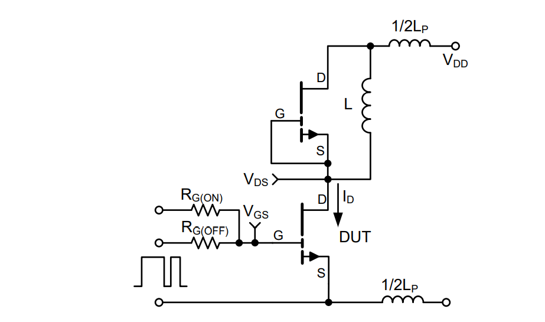
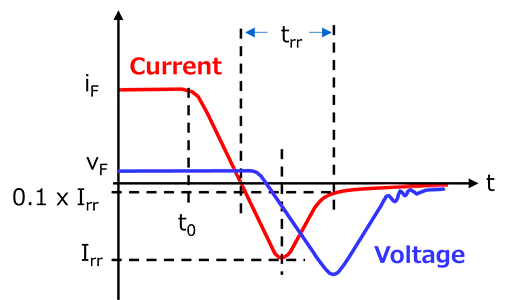
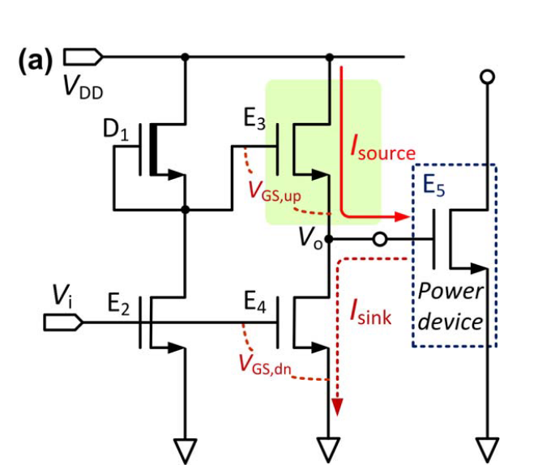
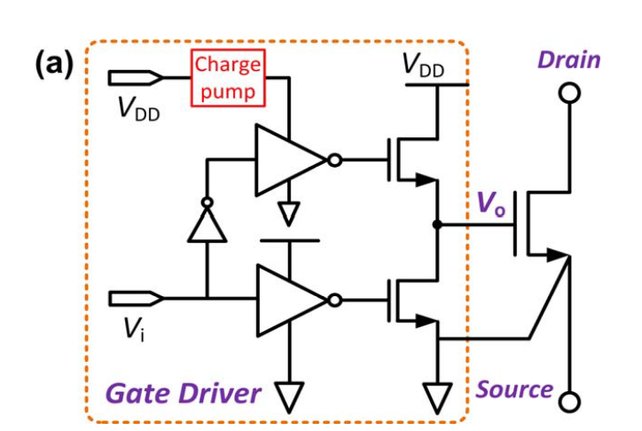
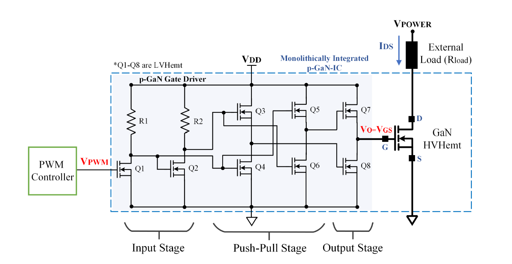

Note of designing and analysing of GaN driver circuit
Property of GaN power devices
Compared with other classic or modern full-controlled switches, whatever Si-based or HEMT structure of GaN switch, it doesn’t contain an intrinsic body diode, which makes the current freewheeling harder and causes a steep voltage gradient. Lack of an intrinsic body diode could be a Double-edged sword:
| Advantage | Disadvantage |
| Without equivalent diode equals to without reverse recovery effect, which makes a high frequency switching possible. | The V-I characteristic in 3rd quadrand consumes more power, which requires a special driver. |
On the other hand, GaN based switch has a unrobust gate structure, especially compared with a MOS gate, exhibits a relatively lower threshold voltage and lower limit of the maximum gate voltage. With higher frequency switching and over-voltage by ringing effect from parasitic elements, leading to a false turn-on issue.
So here is a summery of the property of GaN driver:
- can output a huge current with small parasitic resistor to realize a fast charging -> fast switching.
- special activation range requires a special and stable voltage supply.
- need a additional configuration for freewheeling.
Using DPT to measure the chacterastic of GaN switches
DPT(double-pulse-test) could be a useful way to test the switching loss of a power switch. The basic idea of it is to generate two pulses:
- The frist pulse: broad pulse width, used to create a steady current through inductor $L$.
- The second pulse: narrow pulse width, used to test the switching loss based on the current created during the first pulse.
The shematic is:

Some more details of this shematic:
- the transistor above connects its both Gate and Source, for a E-mode transistor, $V_{GS} = 0 < V_{th}$, always turned off, works as a diode.
- Both $R_{G(on)}$ and $R_{G(off)}$ are used for turning ON/OFF. While requiring fast switching frequency, ON/OFF with small resistor to create large sink/drain current.
Shortcoming Of DPT
A significant problem of DPT is the reverse recovery effect of the diode.

During the on-time, the concentration of carrier of both hole and electron at the interface of PN junction is relatively high. After switching it off with a reverse current direction, it needs time to create a reverse junction electrical field, it leads to a reverse current loading which consumes more switching power.
Several ways to decrease this effect:
- Use Schottky diodes: Schottky diodes have an extremely short reverse recovery time, which is almost negligible.
- Use SiC (silicon carbide) or GaN (gallium nitride) diodes: SiC and GaN diodes have extremely low reverse recovery charges, so the reverse recovery effect is very small.
- Parallel snubber circuit: Connecting an RC snubber circuit or an RCD snubber circuit in parallel at both ends of the diode can absorb the peak current during reverse recovery and reduce the impact of reverse recovery on the circuit.
- Increase the recovery time of the diode: In some applications, you can choose to increase the recovery time of the diode and reduce the peak value of the reverse recovery current, but this method is suitable for circuits that do not require high switching speed.
Other shortcomming, such as parasitic effect, should also be taken into consideration. A better PCB design could improve this problem.
Ways to contruct a GaN driver circuit
According to the referenced thesis, there’re two useful topology of the GaN driver:
Conventional design of Methode 1:

However shortcommings:
- threshold of $E3$ leads to a voltage drop in $E5$, but higher $V_{DD}$ causes higher static power consumption.
Upgrade of Methode 1:

With a charge pump the $V_{DD}$ keep invariant, but $V_{o,max}$ will not be influenced by threshold voltage of $E3$.
Conventional design of Methode 2:
The logic stage is designed using a RTL structure, the resistor acts as pull-up and the E-mode GaN device works as pull-down.
Shortcoming:
- static consumption by resistor.
Upgrade of Methode 2:

For improvement:
- the resistor can be replaced with an active load (diode connected) structure, by the threshold of diode makes the output voltage unaccurate -> lager power supply.
- combines RTL inverters and Push-Pull buffers to reduce the static power consumption.
(but why????)